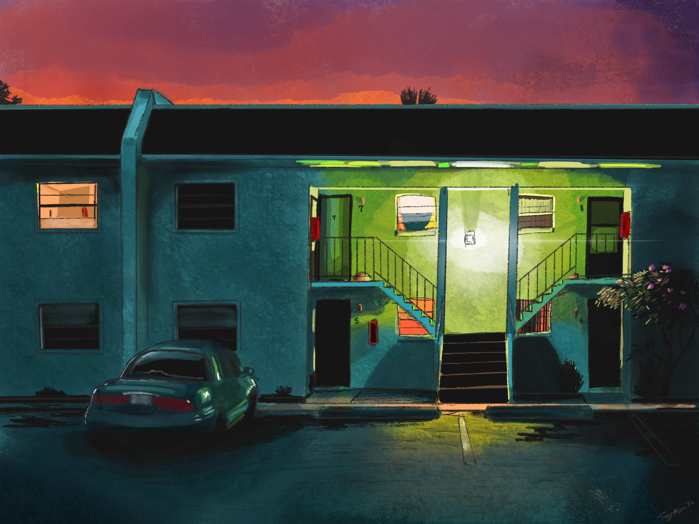

I discovered Christopher McCurdy's work a few years ago and, when looking at his photographs for the first time, I remember my very first thought after the initial gasp was "Man, I want to paint that. I need to learn how to paint." His absolutly flawless eye for beauty in the mundane, worn down, and abandoned is something I eat up with a spoon. His photographs of nature look like paintings. Some photographers fall hard into the over-saturation trap, especially with nighttime photos. McCurdy avoids this masterfully. He knows how to capture light and color in a way I haven't seen from any others, and quite frankly, I adore him.
I'm nowhere near where I want to be as an artist, so for years I kept telling myself that I cannot attempt to paint one of his photographs until I'm really good. The more time flows towards the future, however, I'm realizing that that is a really bad excuse for not drawing or painting more. So tonight I did my first attempt at painting one of my all time favorite McCurdy photographs. I don't know if it has a name, but I've always called it:
"Apartment at Dusk"

I'm still really clumsy with digital paint brushes. I can't quite figure out how to pick the right ones and maintain a "painting" look. I'm still more comfortable with pencil brushes, and therefore my paintings always come out looking like cartoon backdrops. To be fair, I love the cartoon backdrop look. If you look at the four windows in the center of the building you'll see how charmingly wonky the windows are. There's real charm in non-straight or level lines and quick pencil strokes. I'm not sure I'll ever stray far from that style.
I am anxious to begin learning how to paint with oil paints though. This dream takes up a lot of my mental space creatively and so I can tend to get discouraged when I don't know how to accomplish the look I want digitally in Procreate. Like, I can visualize it in my mind, I know what good looks like, but I don't know how to accomplish it. I have to keep reminding myself that the journey towards learning oil is just beginning and I cannot expect to grasp it immediately.
So in the mean time, I'll keep practicing light and color values in my own style. And I'll probably keep doing that with McCurdy references.
Love ya, Pal, and thanks for reading.

Comments
Loading comments...